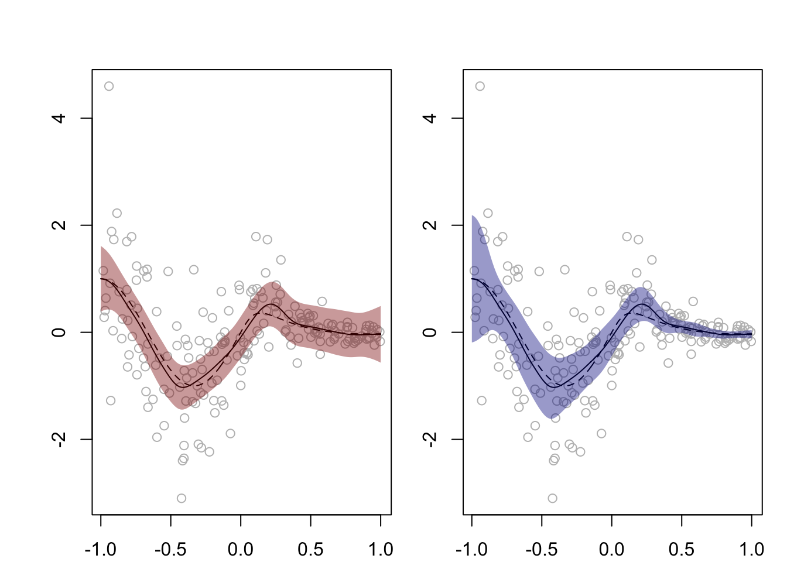

Definition 39.1 (Nonparametric regression model with possibly non-constant variance) Suppose we observe data pairs \((x_1,Y_1),\dots,(x_n,Y_n) \in [0,1]\times \mathbb{R}\), where \[
Y_i = m(x_i) + \varepsilon_i
\] for \(i=1,\dots,n\), where \(x_1,\dots,x_n\) are fixed (deterministic), \(m\) is an unknown function on \([0,1]\), and \(\varepsilon_1,\dots,\varepsilon_n\) are independent random variables such that \(\mathbb{E}\varepsilon_i=0\) and \(\mathbb{E}\varepsilon_i^2 = \sigma_i^2 \in (0,\infty)\) for \(i=1,\dots,n\).
Our goal will be to construct a confidence band for the unknown function \(m\), according to the definition of a confidence band below:
Definition 39.2 (Confidence band) The collection of intervals \(I(x) = [L(x),U(x)]\), \(x \in [0,1]\), with random endpoints \(L(x),U(x)\in \mathbb{R}\) is a \((1-\alpha)100\%\) confidence band for the function \(m:[0,1]\to \infty\) if \[
\mathbb{P}\Big(\bigcap_{x \in [0,1]}\big\{ m(x) \in I(x)\big\}\Big) = 1 -\alpha.
\]
We consider constructing a confidence band for \(m\) based on a linear estimator of \(m\); that is, an estimator of the form \[
\hat m_n(x) = \sum_{i=1}^nW_{ni}(x)Y_i
\tag{39.1}\] for some weights \(W_{n1}(x),\dots,W_{nn}(x)\), \(x \in [0,1]\). We note that for estimators of this form we have \(\mathbb{V}\hat m_n(x) = \sum_{i=1}^nW_{ni}^2(x)\sigma_i^2\).
Recall the decomposition at each \(x\) from Chapter (fill in chapter crossreference once I’ve written that chapter): \[
\frac{\hat m_n(x) - m(x)}{\sqrt{\mathbb{V}\hat m_n(x)}} = \frac{\hat m_n(x) - \mathbb{E}\hat m_n(x)}{\sqrt{\mathbb{V}\hat m_n(x)}} + \frac{\mathbb{E}\hat m_n(x) - m(x)}{\sqrt{\mathbb{V}\hat m_n(x)}},
\] where, under some conditions, the first term is asymptotically \(\mathcal{N}(0,1)\) and the second term can be made to vanish as \(n \to \infty\) if the estimator \(\hat m_n(x)\) is undersmoothed. Our strategy will be to assume that the estimator \(\hat m_n(x)\) is undersmoothed, and then proceed as though \(\mathbb{E}\hat m_n(x)\) were equal to \(m(x)\), that is ignoring the bias.
We first consider the constant-variance case \(\sigma_i^2 = \sigma^2\) for \(i=1,\dots,n\), and begin by considering the asymptotic distribution of the pivotal quantity \[
T_n = \sup_{x\in[0,1]} \left|\frac{\hat m_n(x) - \mathbb{E}\hat m_n(x)}{\hat \sigma_n \sqrt{\sum_{i=1}^n W^2_{ni}(x)}}\right|,
\tag{39.2}\] where \(\hat \sigma_n^2\) is a consistent estimator of \(\sigma^2\), for example the estimator \[
\hat \sigma_n^2 = \frac{1}{2(n-1)}\sum_{i =1}^{n-1}\left(Y_{(i+1)} - Y_{(i)}\right)^2,
\tag{39.3}\] where \((x_{(1)},Y_{(1)}),\dots,(x_{(n)},Y_{(n)})\) are the data pairs re-ordered such that \(x_{(1)} < x_{(2)} < \dots < x_{(n)}\); see Rice et al. (1984). (This will have been introduced in a previous chapter as well, so I can simply refer back to it once I have written that chapter).
To obtain the asymptotic distribution of \(T_n\) as \(n \to \infty\), we will use the result of Sun, Loader, et al. (1994), as presented in Wasserman (2006).
Theorem 39.1 (Tube formula of Sun and Loader) For a set of independent standard Normal random variables \(\xi_1,\dots,\xi_n\) and differentiable functions \(M_{n1}(x),\dots,M_{nn}(x)\), we have \[
P\Big( \sup_{x \in [0,1]} \Big|\sum_{i=1}^n M_{ni}(x)\xi_i\Big| > c \Big) \approx 2(1 - \Phi(c)) + \frac{\kappa}{\pi}e^{-c^2/2}
\] for large \(c\) and large enough \(n\), where \(\kappa = \int_0^1 \sqrt{\sum_{i=1}^n [\frac{\partial}{\partial x} M_{ni}(x)]^2}dx\).
Based on Theorem 39.1, define the band \[
\textstyle I^\infty_{T_n}(x) = \Big[~\hat m_n(x) \pm c_\alpha \hat \sigma_n \sqrt{\sum_{i=1}^n W_{ni}^2(x)}~\Big], \quad x \in[0,1],
\tag{39.4}\] where \(c_\alpha\) solves the equation \[
2(1 - \Phi(c)) + \frac{\kappa}{\pi}e^{-c^2/2} = \alpha
\] over \(c > 0\) with \(\kappa\) defined with the functions \[
M_{ni}(x) =\frac{W_{ni}(x)}{\sqrt{\sum_{j=1}^n W_{nj}^2(x)}}, \quad x \in [0,1], \quad i = 1,\dots,n.
\]
Theorem 39.2 (Confidence band under constant variance) Let \(\hat m_n\) be a linear estimator of \(m\) as in Equation 39.1 in the model in Definition 39.1 with \(\sigma_i^2 = \sigma^2\) for \(i=1,\dots,n\) and assume \[
\sup_{x \in [0,1]} \frac{|\mathbb{B}\hat m_n(x)|}{\sqrt{\mathbb{V}\hat m_n(x)}} \stackrel{p}{\rightarrow}0
\tag{39.5}\] as well as \(\hat \sigma_n^2 \stackrel{p}{\rightarrow}\sigma^2\) as \(n \to \infty\). Then we have \[
\mathbb{P}\Big(\bigcap_{x \in [0,1]}\big\{ m(x) \in \hat I_{T_n}(x)\big\}\Big) \approx 1-\alpha
\] as \(n \to \infty\).
Let \[
Z_n = \sup_{x\in[0,1]} \left|\frac{\hat m_n(x) - \mathbb{E}\hat m_n(x)}{\sigma \sqrt{\sum_{i=1}^n W^2_{ni}(x)}}\right|
\] and note that for each \(x \in [0,1]\) we may write \[
\frac{\hat m_n(x) - \mathbb{E}\hat m_n(x)}{\sigma \sqrt{\sum_{i=1}^n W^2_{ni}(x)}} = \sum_{i=1}^nM_{ni}(x)(\varepsilon_i/\sigma),
\] where \[
M_{ni}(x) =\frac{W_{ni}(x)}{\sqrt{\sum_{j=1}^n W_{nj}^2(x)}}, \quad i = 1,\dots,n.
\] In consequence, Theorem 39.1 gives \[\begin{align}
&P(|Z_n| \leq c_\alpha) \approx 1 - \alpha\\
\iff &P\Big(\sup_{x \in [0,1]} \Big|\frac{\hat m_n(x) - \mathbb{E}\hat m_n(x)}{\sigma \sqrt{\sum_{i=1}^n W^2_{ni}(x)}}\Big| \leq c_\alpha\Big) \approx 1 - \alpha\\
\iff &P\Big(\bigcap_{x \in [0,1]} \Big\{\Big|\frac{\hat m_n(x) - \mathbb{E}\hat m_n(x)}{\sigma \sqrt{\sum_{i=1}^n W^2_{ni}(x)}}\Big| \leq c_\alpha \Big\} \Big)\approx 1 - \alpha\\
\iff &P\Big(\bigcap_{x \in [0,1]} \Big\{\mathbb{E}\hat m_n(x) \in \Big[~\hat m_n(x) \pm c_\alpha \sigma \textstyle\sqrt{\sum_{i=1}^n W_{ni}^2(x)}~\Big]\Big\} \Big)\approx 1 - \alpha.
\end{align}\] Now, due to the assumption that the bias is of smaller order than the standard deviation of the estimator, i.e. because of the assumption in Equation 39.5, we can replace \(\mathbb{E}\hat m_n(x)\) with \(m(x)\) and due to the assumed consistency of the estimator \(\hat \sigma_n^2\), we can replace \(\sigma^2\) with \(\hat \sigma^2_n\), which gives the result.
In order to construct the intervals \(\hat I_n(x)\), \(x \in [0,1]\) defined in Equation 39.4 we must obtain \(\kappa\). The value \(\kappa\) is difficult to obtain exactly, but one can compute an approximation to it as \[
\kappa \approx \sum_{j=1}^{N-1} \sqrt{\sum_{i=1}^n[M_{ni}(t_{j+1}) - M_{ni}(t_j)]^2},
\tag{39.6}\] given a grid of values \(0 = t_1< \dots <t_N = 1\), for some large \(N\).
Justification for the approximation in Equation 39.6.
Under non-constant variance, one considers the pivotal quantity \[
H_n = \sup_{x\in[0,1]} \left|\frac{\hat m_n(x) - \mathbb{E}\hat m_n(x)}{\sqrt{\sum_{i=1}^n W^2_{ni}(x)\hat \varepsilon_i^2}}\right|,
\] which recalls the quantity \(H_n\) defined in Chapter 38 in the context of linear regression with non-constant variance. In this case we define the band \[
\textstyle I^\infty_{H_n}(x) = \Big[~\hat m_n(x) \pm \hat c_\alpha \sqrt{\sum_{i=1}^n W_{ni}^2(x) \hat \varepsilon_i^2}~\Big], \quad x \in[0,1],
\tag{39.7}\] based on the tube formula in Theorem 39.1, where \(\hat c_\alpha\) solves the equation \[
2(1 - \Phi(c)) + \frac{\hat \kappa}{\pi}e^{-c^2/2} = \alpha
\] over \(c > 0\), where \(\hat \kappa\) defined with the functions \[
\hat M_{ni}(x) = \frac{W_{ni}(x)|\hat \varepsilon_i|}{\sqrt{\sum_{j=1}^n W_{nj}^2(x)\hat\varepsilon_j^2}}, \quad i =1,\dots,n.
\]
Let \[
Z_n = \sup_{x\in[0,1]} \Bigg|\frac{\hat m_n(x) - \mathbb{E}\hat m_n(x)}{\sqrt{\sum_{i=1}^n W^2_{ni}(x)\sigma_i^2}}\Bigg| = \sup_{x\in[0,1]} \Big|\sum_{i=1}^nM_{ni}^\boldsymbol{\sigma}(x)(\varepsilon_i / \sigma_i)\Big|,
\] where \[
M_{ni}^\boldsymbol{\sigma}(x) = \frac{W_{ni}(x)\sigma_i}{\sqrt{\sum_{j=1}^n W^2_{nj}(x)\sigma_j^2}}, \quad i = 1,\dots,n.
\tag{39.8}\] Then Theorem 39.1 gives \[
P(Z_n > c) \approx 2(1 - \Phi(c)) + \frac{\kappa}{\pi}e^{-c^2/2}
\] for large enough \(c\) and \(n\), where \(\kappa\) is based on the functions \(M_{ni}^\boldsymbol{\sigma}(x)\), \(i=1,\dots,n\). The band in Equation 39.7 results from replacing the functions \(M_{ni}^\boldsymbol{\sigma}(x)\), \(i=1,\dots,n\) with the \(\hat M_{ni}(x)\), \(i=1,\dots,n\) defined in Equation 39.8.
Stating it informally, this band, under some conditions, achieves coverage \(1-\alpha\) as \(n \to \infty\).
Figure 39.1 shows confidence bands constructed as in Equation 39.4, which assumes constant variance, and as in Equation 39.7, which allows non-constant variance, on a single data set.
Code
# function used to find calphagetca <-function(x,k,alpha) 2*(1-pnorm(x)) + k/pi *exp(-x^2/2) - alpha# function for computing asymptotic confidence bandsasympCBnw <-function(X,Y,h,alpha,xlims,het =FALSE,N=500){ n <-length(Y) x <-seq(xlims[1],xlims[2],length=N) Wx <-dnorm(outer(x,X,FUN="-"),0,h) Wx <- Wx /apply(Wx,1,sum) # scales each row mx_hat <-drop(Wx %*% Y)if(het == F){ sigma_hat <-sqrt(sum(diff(Y[order(X)])^2) / (2* (n -1))) Mx <- Wx /sqrt(apply(Wx^2,1,sum)) k <-sum(sqrt(apply(apply(Mx,2,diff)^2,1,sum))) ca <-uniroot(f = getca,interval =c(0,10), k = k, alpha=alpha)$root me <- ca * sigma_hat *sqrt(apply(Wx^2,1,sum)) lo <- mx_hat - me up <- mx_hat + me } elseif(het == T){ S <-dnorm(outer(X,X,FUN="-"),0,h) S <- S /apply(S,1,sum) Yhat <-drop(S %*% Y) ehat <- Y - Yhat Wx_hat <-t(abs(ehat)*t(Wx)) Mx_hat <- Wx_hat /sqrt(apply(Wx_hat^2,1,sum)) k_hat <-sum(sqrt(apply(apply(Mx_hat,2,diff)^2,1,sum))) ca_hat <-uniroot(f = getca,interval =c(0,10), k = k_hat, alpha=alpha)$root me <- ca_hat *sqrt(apply(Wx_hat^2,1,sum)) lo <- mx_hat - me up <- mx_hat + me } output <-list(lo = lo,up = up,mx_hat = mx_hat,x = x)return(output)}# generate some datam <-function(x){sin(3* pi * x /2)/(1+18* x^2*(sign(x) +1))}n <-200X <-runif(n,-1,1)sigma <- (1.5- X)^2/4error <-rnorm(n,0,sigma)Y <-m(X) + error# now obtain the confidence bandsN <-300h <-0.08alpha <-0.05CB <-asympCBnw(X,Y,h,alpha,xlims =c(-1,1),het = F, N = N)CBhet <-asympCBnw(X,Y,h,alpha,xlims =c(-1,1),het = T,N = N)# make plotspar(mfrow=c(1,2), mar =c(2.1,2.1,1.1,1.1), oma =c(0,2,2,0))plot(Y~X,col="gray")lines(CB$mx_hat ~ CB$x)lines(m(CB$x) ~ CB$x, lty =2)polygon(x =c(CB$x,CB$x[N:1]),y =c(CB$lo,CB$up[N:1]), col =rgb(.545,0,0,.4),border =NA)plot(Y~X,col="gray")lines(CBhet$mx_hat ~ CBhet$x)lines(m(CBhet$x) ~ CBhet$x, lty =2)polygon(x =c(CBhet$x,CBhet$x[N:1]),y =c(CBhet$lo,CBhet$up[N:1]), col =rgb(0,0,.545,.4),border =NA)

Figure 39.1: Asymptotic 95% confidence bands from Equation 39.4 and Equation 39.7 based on the Nadaraya–Watson estimator (with the Gaussian kernel) for a nonparametric regression function assuming constant variance (left) and allowing non-constant variance (right), respectively.
Rice, John et al. 1984. “Bandwidth Choice for Nonparametric Regression.”The Annals of Statistics 12 (4): 1215–30.
Sun, Jiayang, Clive R Loader, et al. 1994. “Simultaneous Confidence Bands for Linear Regression and Smoothing.”The Annals of Statistics 22 (3): 1328–45.
Wasserman, Larry. 2006. All of Nonparametric Statistics. Springer Science & Business Media.